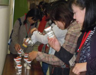
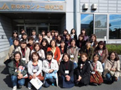

- 【日時】
- 10月27日(水)10:30～13：00
- 【場所】
- 彩の米センターライスランド21(久喜市)
- 【出席者】
- 34人(さいたまコープ、ドゥコープ、勤労者生協、医療生協、高齢協、住宅生協、事務局)
■テーマ
- 私達の食生活の基本である“米”について学ぼう
～埼玉県産米の消費について、今年の埼玉県のお米について、米作りなど～
■学習会

- ライスランド21でDVDによる学習後、営農支援課による埼玉県の野菜、彩のかがやき、稲とお米についての講習と質疑応答を行いました。
「“彩のかがやき”は複数の害虫や病気に抗体を持ち種子消毒も温湯消毒で十分で、農薬を使う必要が少ない米です。今年の新米は等級が低いですが、味は大きく変わりません。」
- 彩の米センター(精米工場)のDVDによる学習後、工場へ移動。見学と説明を受けた後、質疑応答を行いました。オートメーション化されていて、少ない人で多くの米が精米されます。ここでは、県内だけでなく東日本各地の米が1日に100トンが精米されます。

＜感想＞
- “彩のかがやき”の試食ができ良かったです。もちもちと美味しく、皆に宣伝します。
- 工場では中に入る事ができて、音や空気や匂いも感じることができ有意義でした。
- 工場が清潔でたいへん広く、大量のお米や正確に働くロボットに驚きました。
他にも、多数の質問や感想をいただきました。
|